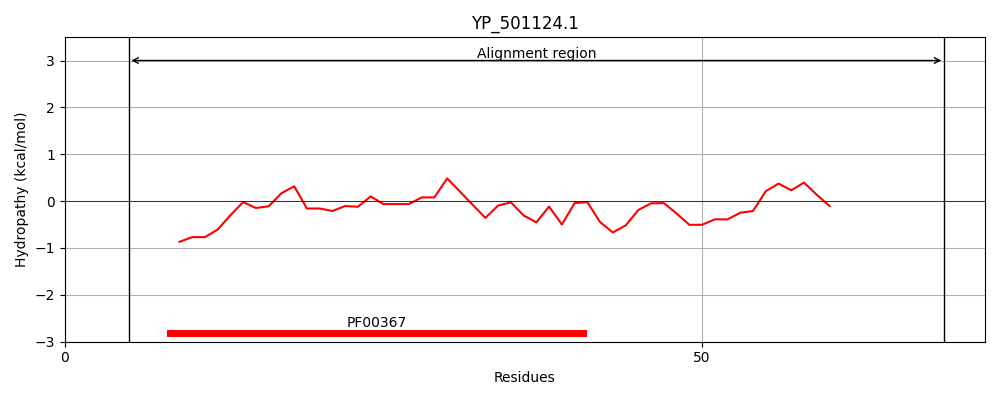
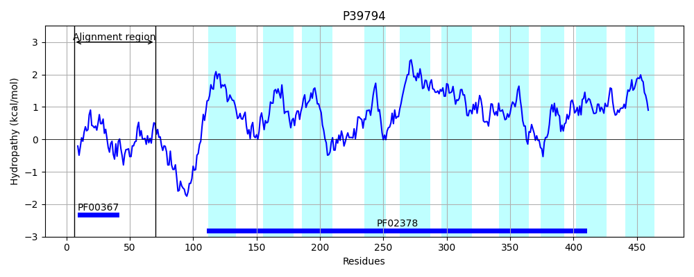
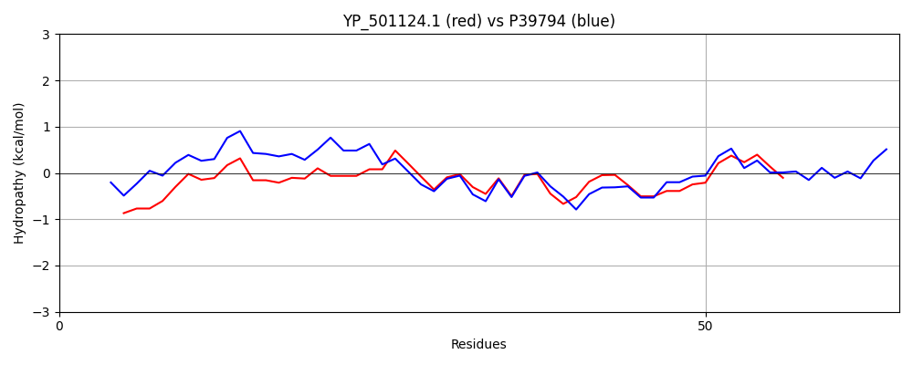

Hit Accession: P39794
Hit TCID: 4.A.1.2.8
Hit Description: gnl|BL_ORD_ID|10303 gnl|TC-DB|P39794|4.A.1.2.8 Probable PTS system, trehalose-specific IIBC component (EIIBC-Tre) (Trehalose-permease IIBC component) (Phosphotransferase enzyme II, BC component) (EC 2.7.1.69) (EII-Tre) - Bacillus subtilis.
Mach Len: 65
e:0.000000
Query TMS Count : 0
Hit TMS Count: 10
TMS-Overlap Score: 0.000000
Predicted Substrates:CHEBI:10202;alpha,alpha-trehalose
BLAST Alignment:
| Protein Hydropathy Plots: | |
|---|---|
|  |  |
Pairwise Alignment-Hydropathy Plot: | |
|  | |